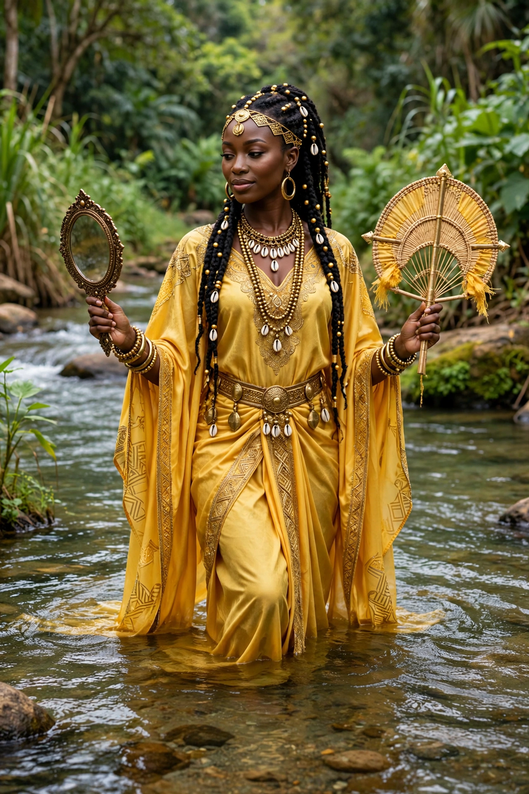

From Wikipedia, the free encyclopedia
| Oshun | |
|---|---|
| Affiliation | Yoruba religion; orisha of rivers, love, fertility, beauty and diplomacy |
| Yoruba | Ọ̀ṣun |
| Domain | The Osun River, Osogbo, Nigeria |
| Sacred site | Osun-Osogbo Sacred Grove (UNESCO World Heritage Site) |
| Symbols | Brass fans, mirrors, honey, peacock and vulture feathers |
| Diaspora forms | Ochún in Santería/Lucumí; Oxum in Candomblé |

Oshun (Yoruba: Ọ̀ṣun) is an orisha — a divine power — of the Yoruba religion of West Africa, presiding over rivers and fresh water, love, fertility, beauty, wealth and diplomacy. She is the deity of the Osun River in southwestern Nigeria, whose sacred grove at Osogbo, with its shrines and monumental sculptures, is a UNESCO World Heritage Site and the scene of the annual Osun-Osogbo festival that draws pilgrims and tourists from across the Yoruba world and its diaspora. In the diaspora religions born of the Atlantic slave trade — Cuban Santería (where she is Ochún), Brazilian Candomblé (Oxum) — she is among the most beloved of all orishas.
A famous itan (sacred story) tells how the male orishas, sent to organise the newly created world, excluded Oshun — the only woman among the seventeen who came to earth — from their counsels; their every work failed until Olodumare, the supreme god, told them nothing could prosper without her, and they begged her return: the myth grounds both her power and a theology of gender balance. Oshun is sweet water and honey, laughter and adornment, but her sweetness conceals steel: wronged, she can withdraw the waters or turn them bitter, and the vulture is her messenger in tales where her patience ends. She is mother, lover (of Shango, in many stories), diplomat and witch (aje) — the orisha whose softness is a form of strength that harder powers underestimate at their cost.
At Osogbo the goddess is honoured as the town's protector under a founding covenant between Oshun and the town's first king; the festival's climax is the procession of the Arugba, a virgin votary carrying the sacrifice to the river. Worshippers dress in gold and yellow, offer honey (tasting it first, for Oshun was once poisoned, the stories say), and seek her for fertility, healing and prosperity. In the diaspora she is syncretised with Our Lady of Charity of El Cobre, Cuba's patroness, and her image — river, mirror, brass, sweetness — has become a global emblem of Yoruba spirituality's survival.